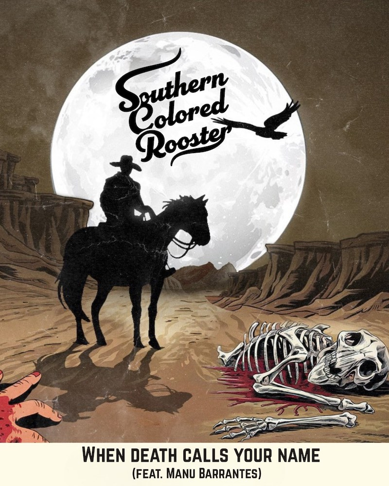
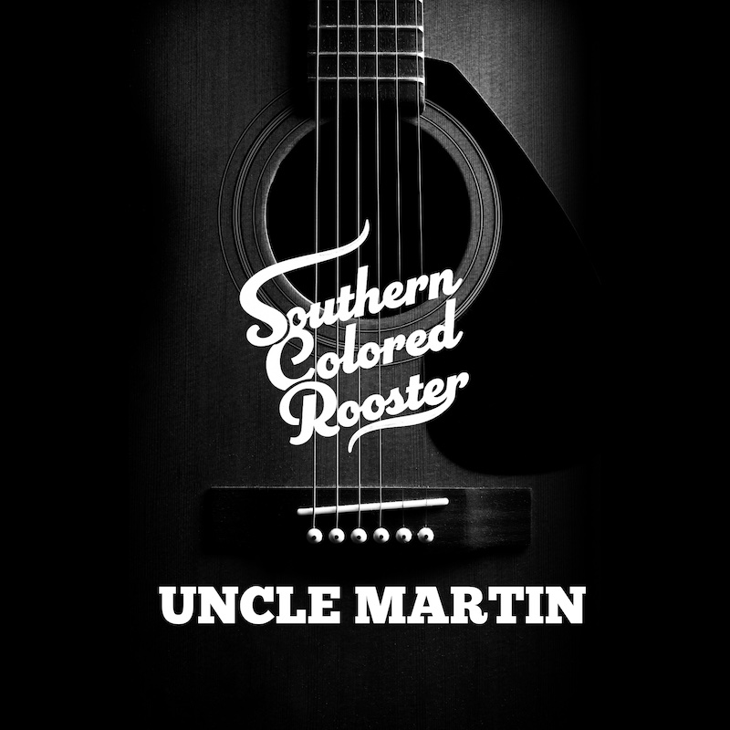

MusicMúsica
SinglesSencillos

Boots On (2026)
Boots On is a defiant outlaw anthem about claiming country music on your own terms. With no southern drawl and no dirt road in his past, the narrator carries the genre's true spirit anyway — a stand against the polished Nashville sound and a call to bring back the grit. Boots On es un himno outlaw desafiante sobre reclamar la música country en tus propios términos. Sin acento sureño ni caminos de tierra en su pasado, el narrador lleva el espíritu verdadero del género de todas formas: una postura contra el sonido pulido de Nashville y un llamado a traer de vuelta el filo.
PreviewAdelanto

Livin' in an old country song (2026)
Livin' in an old country song tells the story of a man who sees his life through the lens of country music, full of mistakes, heartbreak, and second chances. Livin' in an old country song cuenta la historia de un hombre que ve su vida a través del lente de la música country, llena de errores, desamores y segundas oportunidades.
Listen OnEscuchar En

When death calls your name (2025)
When death calls your name tells a darker story inspired by the spirit of outlaw country. The song follows a lone character who chooses to face evil head-on, fully aware that the price may be his own life. When death calls your name cuenta una historia más oscura inspirada en el espíritu del outlaw country. La canción sigue a un personaje solitario que elige enfrentar el mal cara a cara, plenamente consciente de que el precio puede ser su propia vida.
The song explores the internal battle between good and evil, the courage to stand your ground, and the moment when a person must confront their fate. La canción explora la batalla interna entre el bien y el mal, el valor de mantener tu posición y el momento en que una persona debe confrontar su destino.
Listen OnEscuchar En

Uncle Martin (2024)
Uncle Martin was our debut single under the name C. Parra. Is a personal story about family, memory, and the roots that shape who we become. Uncle Martin fue nuestro sencillo debut bajo el nombre de C. Parra. Es una historia personal sobre la familia, la memoria y las raíces que moldean en quién nos convertimos.
Listen OnEscuchar En
AlbumsÁlbumes
Campfire Stories
“Campfire Stories” will be our debut album. It is an album built around one of the oldest traditions in country music. Telling stories with a guitar in your hands. Each song feels like a tale that could be shared around a campfire, among friends, under the open sky. "Campfire Stories" será nuestro álbum debut. Es un álbum construido alrededor de una de las tradiciones más antiguas de la música country. Contar historias con una guitarra en las manos. Cada canción se siente como un cuento que podría compartirse alrededor de una fogata, entre amigos, bajo el cielo abierto.
The record brings together stories of life, characters, loss, redemption, and second chances. Blending country and southern rock with the spirit of classic rock, “Campfire Stories” aims to capture songs that feel lived in, the kind of stories that sound true the moment you hear them. El disco reúne historias de vida, personajes, pérdida, redención y segundas oportunidades. Mezclando el country y el rock sureño con el espíritu del rock clásico, "Campfire Stories" busca capturar canciones que se sienten vividas, el tipo de historias que suenan ciertas en el momento en que las escuchas.
TracklistLista de Canciones
Calls me home Sentirse en casa
Southern Colored Rooster was born from a life surrounded by music. We grew up in a home where singing was part of everyday life and a guitar was always within reach. Music was never a phase. It was the language we learned to feel in. Southern Colored Rooster nació de una vida rodeada de música. Crecimos en un hogar donde cantar era parte del día a día y siempre había una guitarra a la mano. La música nunca fue una fase. Fue el idioma en el que aprendimos a sentir.
For years, I stepped away from that path. Life took me in different directions. Still, I kept writing. Notebooks filled with lyrics that had no sound yet. Stories waiting for their time. Durante años, me alejé de ese camino. La vida me llevó en diferentes direcciones. Aún así, seguí escribiendo. Cuadernos llenos de letras que aún no tenían sonido. Historias esperando su momento.
In 2024, I wrote “Uncle Martin” and everything shifted. I remembered who I am when I hold a guitar. Then came “When Death Calls Your Name” and more songs that needed to be heard. En 2024, escribí "Uncle Martin" y todo cambió. Recordé quién soy cuando sostengo una guitarra. Luego vino "When Death Calls Your Name" y más canciones que necesitaban ser escuchadas.
The project started under my own name, C. Parra. It was the right beginning. But what I was building needed a stronger identity. El proyecto comenzó bajo mi propio nombre, C. Parra. Fue el comienzo correcto. Pero lo que estaba construyendo necesitaba una identidad más fuerte.
Southern Colored Rooster blends country and southern rock with the metal influence that shaped my teenage years. It is Costa Rica and Nashville in the same song. It is tradition with edge. Honest lyrics. Strong guitars. Stories that feel lived. Southern Colored Rooster mezcla el country y el rock sureño con la influencia del metal que formó mis años de adolescencia. Es Costa Rica y Nashville en la misma canción. Es tradición con filo. Letras honestas. Guitarras fuertes. Historias que se sienten vividas.
This is more than a new name. It is a commitment to who I am as a songwriter. It is about bringing the songs out of the drawer and into the firelight. Esto es más que un nombre nuevo. Es un compromiso con quien soy como cantautor. Se trata de sacar las canciones del cajón y llevarlas a la luz del fuego.
It's time to grab my hat and put my boots on! ¡Es hora de agarrar mi sombrero y ponerme las botas!
— Charlie Parra
MusiciansMúsicos
Additional MusiciansMúsicos Adicionales
Follow the RoosterSigue al Gallo
Stay connected. New music and stories are on the way. Mantente conectado. Nueva música e historias vienen en camino.